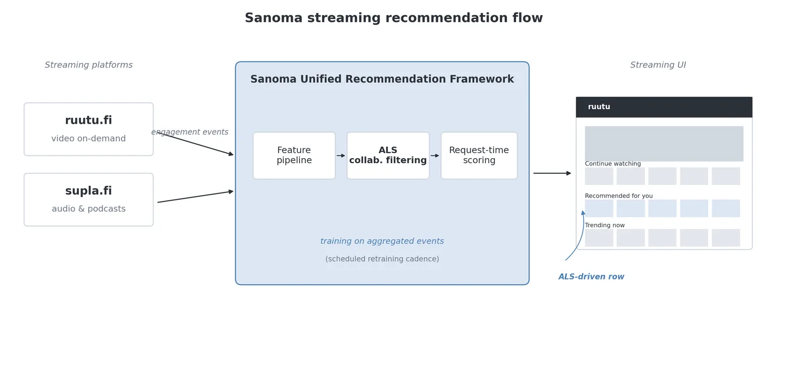
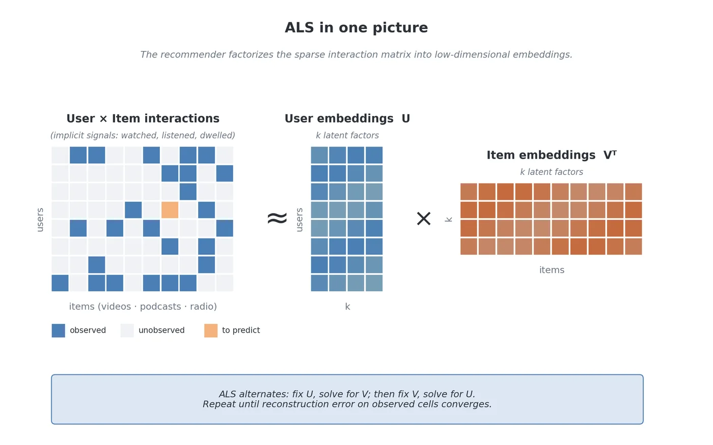
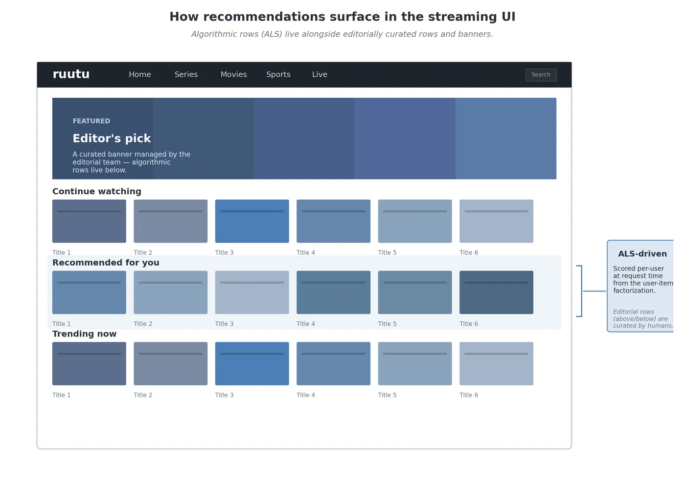

Sanoma Media Finland — Recommendation Platform
The Whispering Stacks
The Whispering Stacks serve two theaters at once — ruutu.fi, where moving pictures play, and supla.fi, where voices are kept. The shelves listen for the faintest signals: what was watched, what was heard, how long a visitor lingered, what they returned for. From these whispers, ALS matrix factorization distills every reader and every story into vectors, and matches them at the moment of asking.
The Librarian's work was modernization, not founding. The old catalogues were written in Scala; they were carried, shelf by shelf, into Python, where the rest of the scholars worked. And because a podcast listener does not behave like a video watcher, new experiments tuned the whispering differently for supla's rhythms — its catalog, its sparsity, its habits of return.
The scores only matter when they reach a reader's hands, so the Librarian also tended the carousels themselves — how algorithmic rows and the editors' chosen rows share the shelf — so the right story arrives in a form worth reaching for.
Project record
Production ALS collaborative-filtering recommender integrated with content delivery across Sanoma's digital media platforms.
Role
Data Scientist (Sanoma Media Finland) — worked on the production ALS collaborative-filtering recommender inside the Sanoma Unified Recommendation Framework, integrated with content delivery; refactored legacy Scala pipelines into Python, built ALS proof-of-concepts for supla.fi, and contributed carousel UX feedback with the product team.
Stack
Results
- Recommendations served in production through the Unified Recommendation Framework, scored at request time across ruutu.fi and supla.fi.
- Scala→Python pipeline modernization created reusable components that accelerated iteration for the data-science team.
Artifacts from the realm


